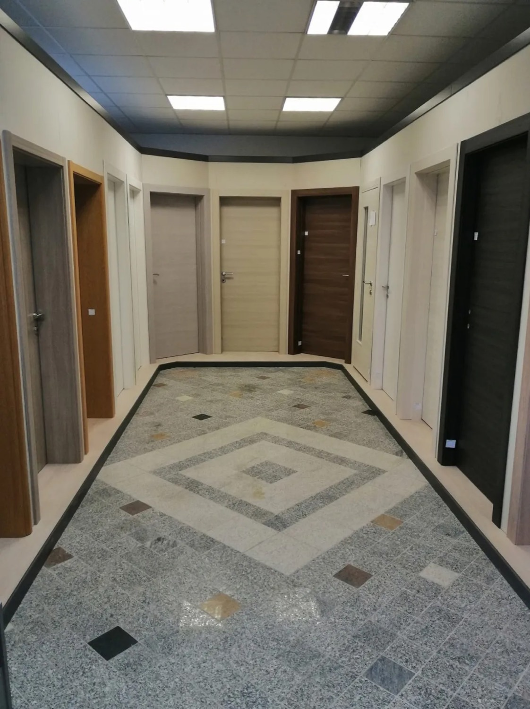
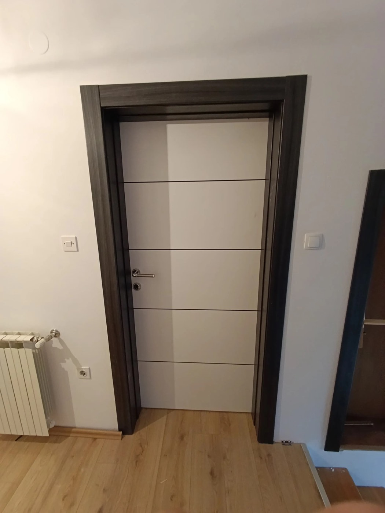
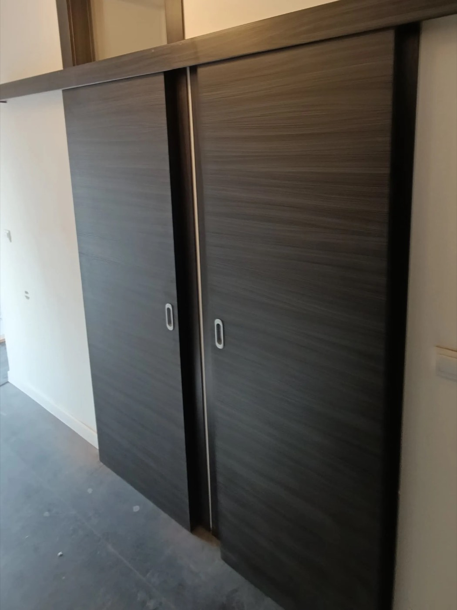
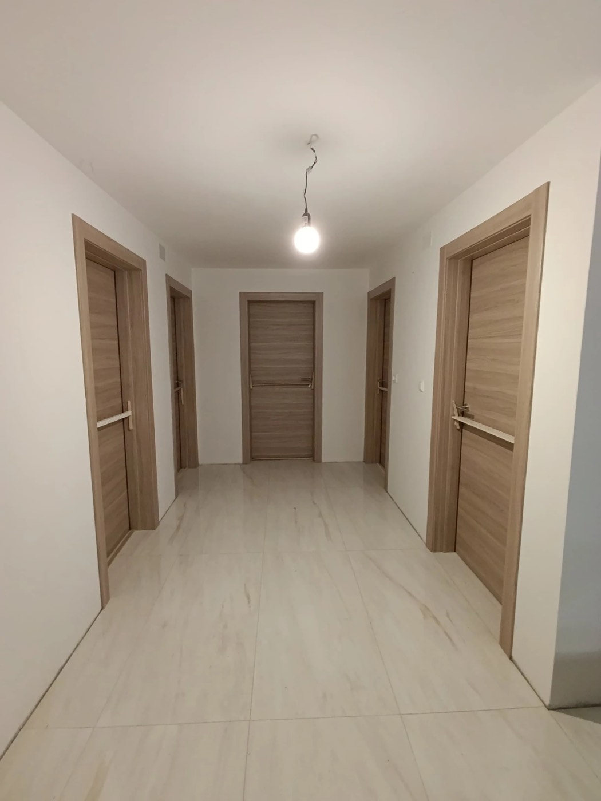
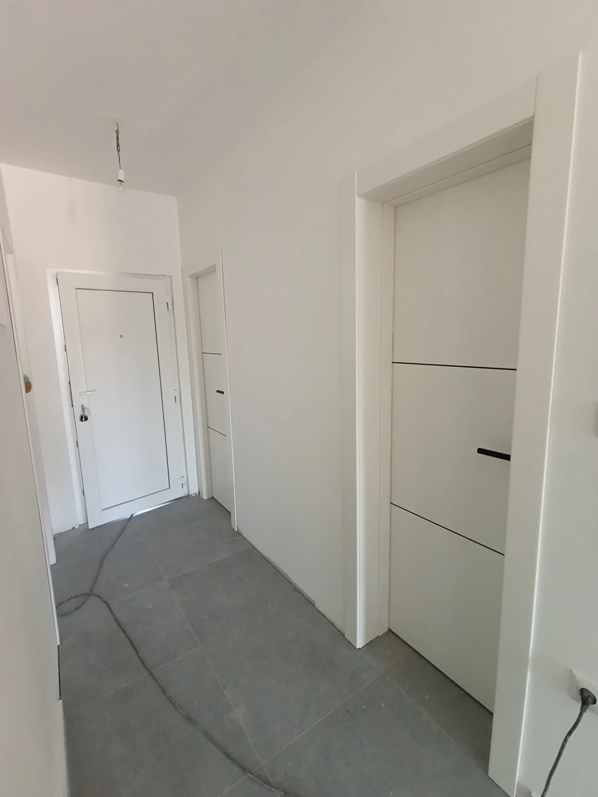
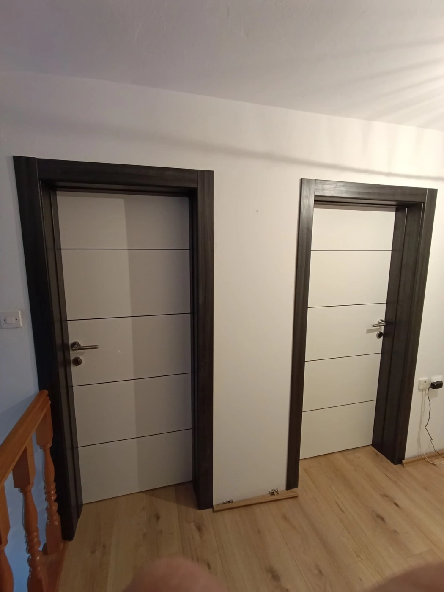

Vrata koja su elegantna i kvalitetna.
Postavljamo kvalitetna sobna vrata u vaše domove. Vjerujemo da svaka kuća zaslužuje vrata koja su istovremeno elegantna i kvalitetna – i radimo na tome da to postignemo za vas.

PoslovnicaPavićeva 60, Đakovo – vrata u različitim dekorima na jednom mjestu.


Postavljamo kvalitetna vrata u vaše domove.
„Vjerujemo da svaka kuća zaslužuje vrata koja su istovremeno elegantna i kvalitetna, i radimo na tome da to postignemo za vas.”
Drvodom je obrt za usluge, trgovinu i proizvodnju iz Đakova. U poslovnici u Pavićevoj 60 vrata možete vidjeti uživo, a mi ih dostavljamo i postavljamo – u Đakovu, Osijeku, Slavonskom Brodu, Vinkovcima, Vukovaru, Županji i drugim gradovima.
Što vam pružaju naša vrata
Rezultat više od 20 godina usavršavanja: sobna vrata s CPL oblogom, moderan dizajn i bogat izbor dekora – od bijelih i svijetlih do tamnih, punih ili sa staklom.
- Kantiran rub krila s tri strane
- CPL obloga vrata
- Debljina vratnog krila 44 mm (25 % snažnije)
- Veća izdržljivost
- Moderan dizajn i bogat izbor dekora
- 3D reljef površine i efekt pravog drveta
- Otpornost vrata na ogrebotine
- U potpunosti drveni štokovi i lajsne za opšav
Zašto Braga?
Braga Group djeluje na tržištu drva od 1974. Iskustvo, izravan nadzor nad cjelokupnim proizvodnim ciklusom, poznavanje svih procesa povezanih s drvom, stalna ulaganja i sposobnost rješavanja problema omogućili su Bragi izvrsnu proizvodnju – i količinom i kvalitetom.
Danas je Braga Group konsolidirani industrijski sustav koji zapošljava 600 ljudi. Glavna djelatnost tvrtke je izrada unutarnjih vrata, a ponuda je široka i upotpunjena raznim dodacima i ekskluzivnim proizvodima.
Ono što mi stvaramo





Iz Đakova do vašeg doma.
Vrata dostavljamo u Slavonski Brod, Osijek, Županju, Vinkovce, Vukovar i druge gradove. Povoljna cijena, široka ponuda i profesionalna usluga.
- Đakovo poslovnica
- Osijek dostava
- Slavonski Brod dostava
- Vinkovci dostava
- Vukovar dostava
- Županja dostava
- i drugi gradovi na upit

Prije nego nazovete
Kakva vrata nudite?
Sobna vrata proizvođača Braga s CPL oblogom, kantiranim rubom krila s tri strane, krilom debljine 44 mm i potpuno drvenim štokovima i lajsnama za opšav. Na izbor su bijeli, svijetli i tamni dekori, puna vrata ili vrata sa staklom.
Dostavljate li vrata izvan Đakova?
Da. Uz Đakovo, vrata dostavljamo u Slavonski Brod, Osijek, Županju, Vinkovce, Vukovar i druge gradove.
Ugrađujete li vrata?
Da, vrata postavljamo u vaš dom. Sve fotografije u galeriji projekata su naši radovi.
Gdje mogu vidjeti vrata uživo?
U našoj poslovnici u Đakovu, Pavićeva 60. Prije dolaska nazovite 099 879 2843 ili 091 989 2757.
Osigurajte svoja vrata danas.
- PoslovnicaPavićeva 60
31400 Đakovo - Telefon099 879 2843
091 989 2757 - E-mailinfo@drvodom.hr
- Pratite nasFacebook – Drvodom Đakovo
Pošaljite upit
Napišite koliko vam vrata treba, za koji prostor i u kojem dekoru – javit ćemo vam se.